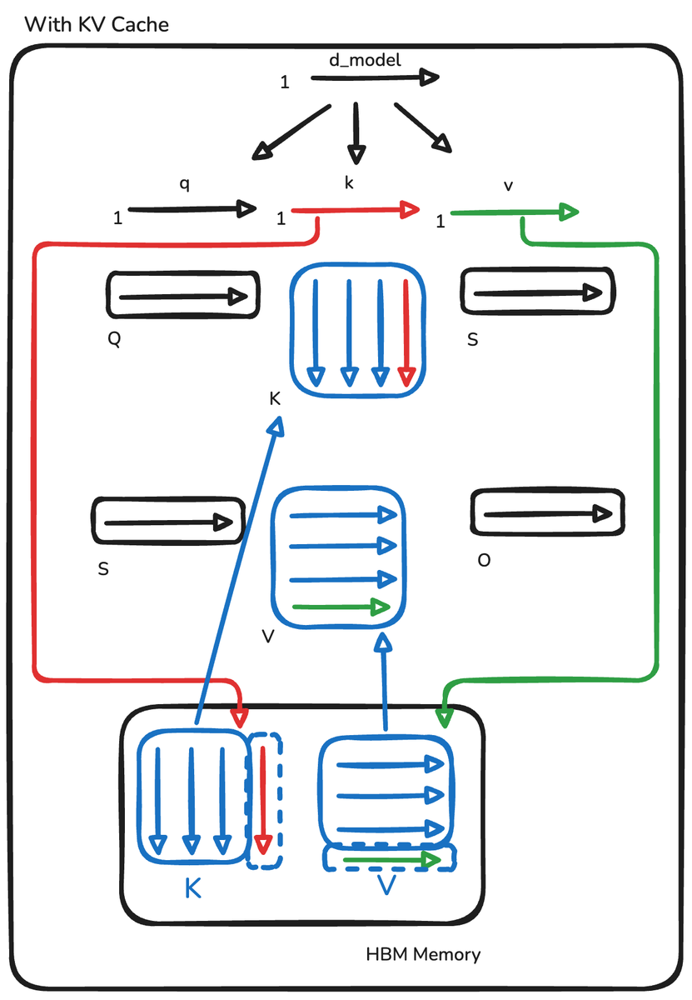
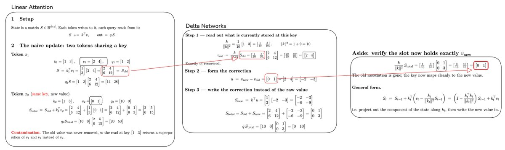
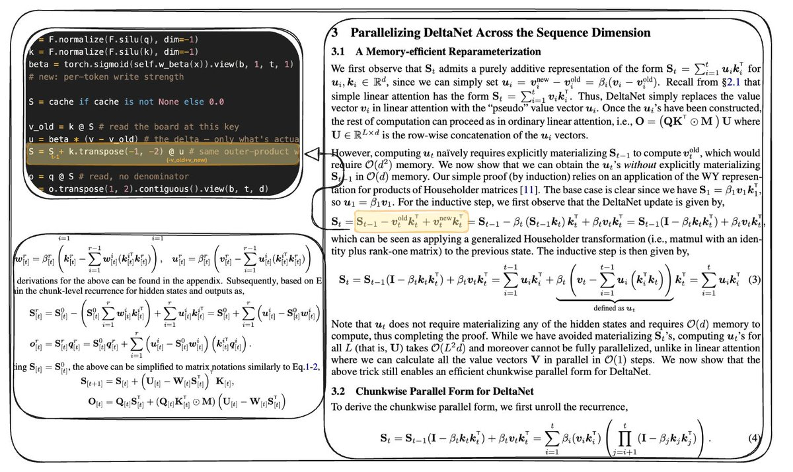
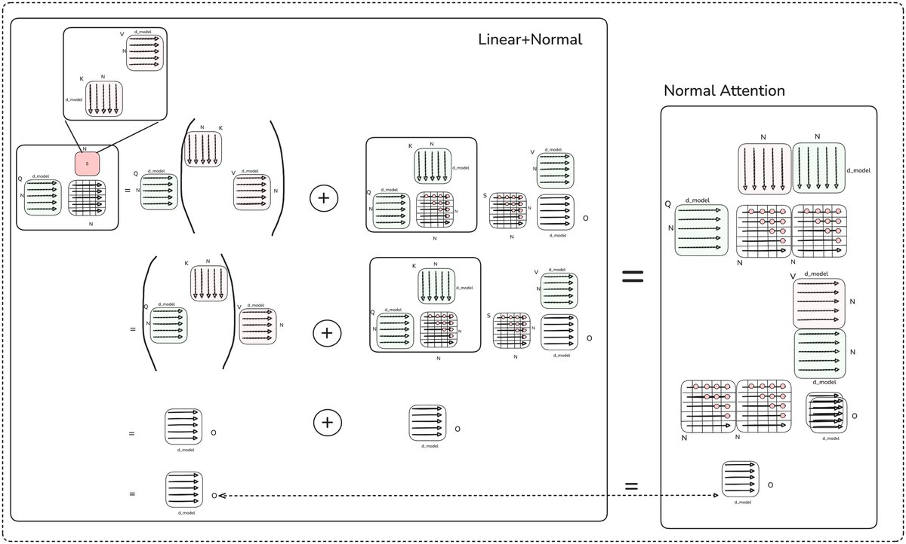
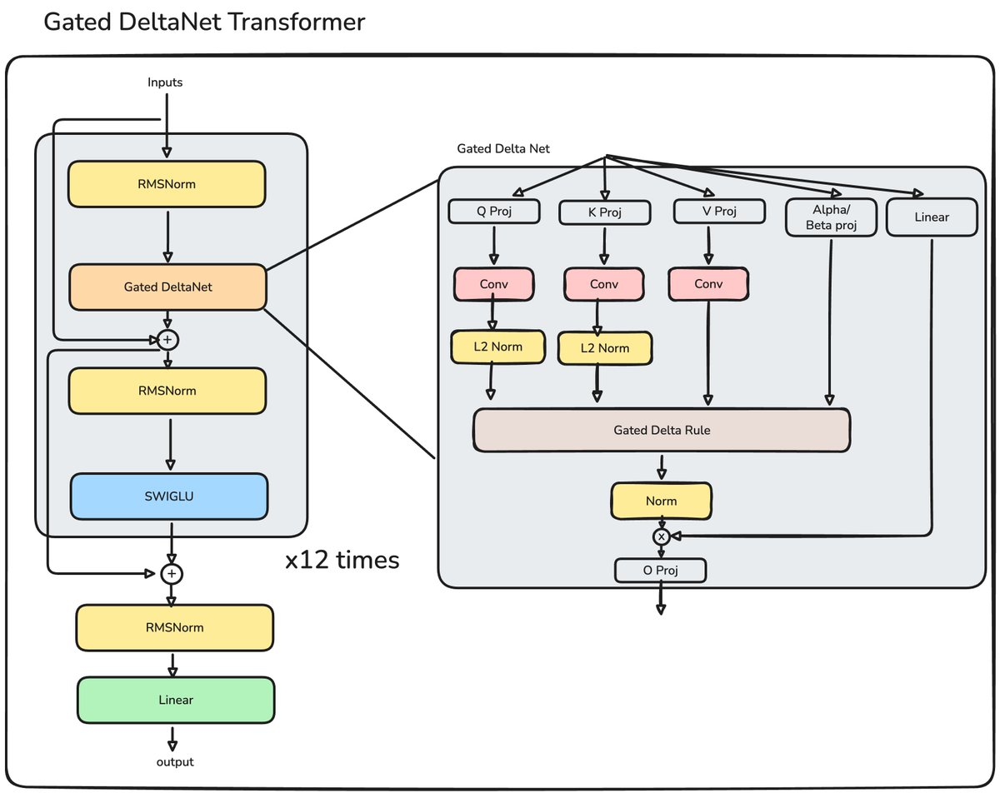
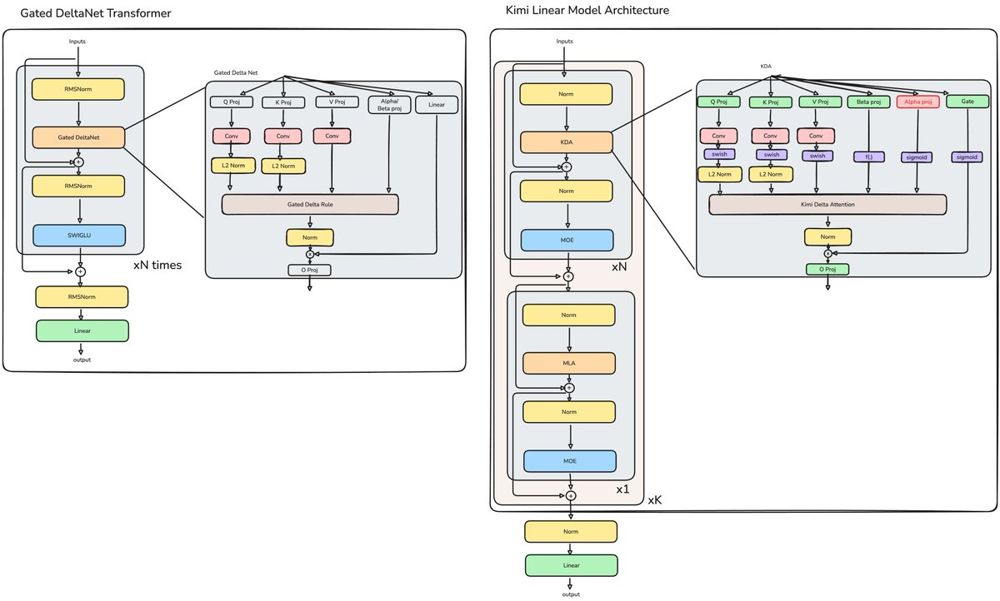
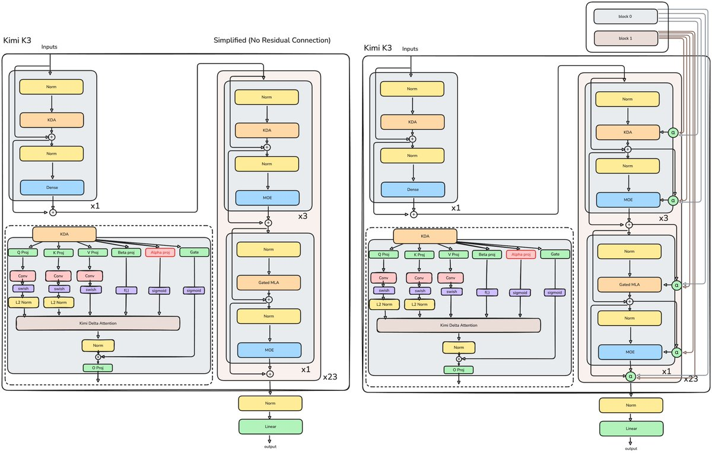
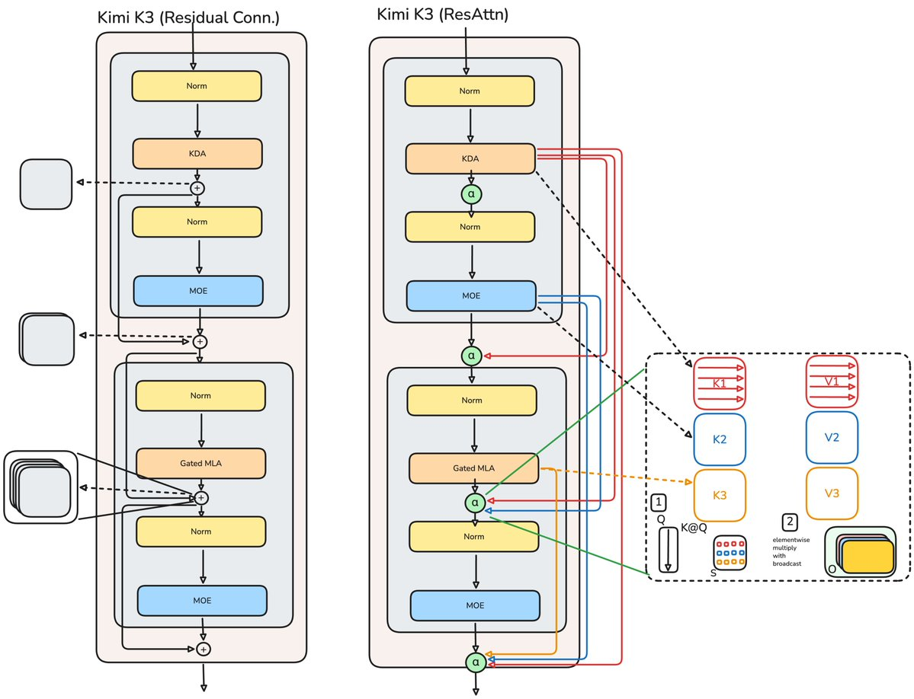
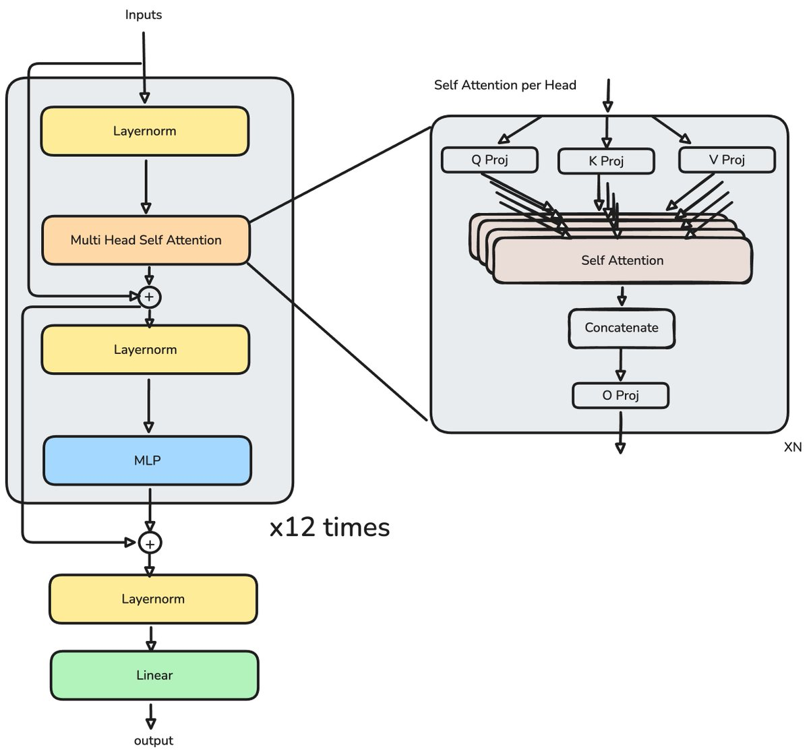
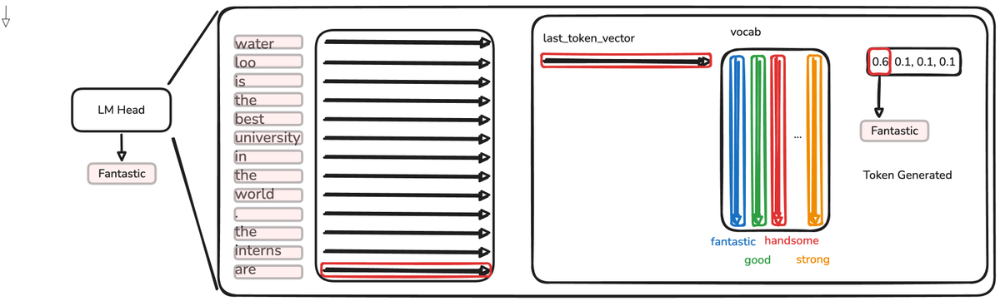

From GPT-2 to Kimi K3

the big pictureIs it just scale?
Twenty-two thousand five hundred and eighty GPT-2 models would fit inside a single Kimi K3. That is the headline number, and it is the wrong thing to stare at. If you line the two models up side by side, the surprising fact is how little of the machine is new. The skeleton is the same one sketched in 2017. What changed lives in one organ — the model's working memory — and every real advance of the last seven years is a different answer to a single, stubborn question about it.
Here is the question. A language model writes one word-piece at a time, and to choose each next piece it looks back over everything written so far and asks, for each earlier word, how much should this one shape what I say next? To do that it has to remember the past. The honest way to remember is to keep a note for every word you have seen and re-read all of them each time you speak. That is what the original design does, and it is perfect: nothing is ever forgotten or smeared. But the pile of notes grows with every word, and re-reading a growing pile is the single most expensive thing a running AI does. When millions of people chat at once, the electricity and the hardware bill are overwhelmingly spent hauling that pile of notes back and forth (the subject of our serving deep-dive).
So there is a tension baked into the machine from the start. Perfect memory is ruinously expensive; cheap memory forgets. You can keep every note (perfect recall, growing cost), or you can fold everything down onto a small fixed-size scratchpad that never grows (cheap and flat, but a fixed board fills up, and once it is full, writing a new fact smears it over an old one). Almost the entire architectural history from GPT-2 to Kimi K3 is the story of engineers refusing to accept that trade as stated — inventing, one idea at a time, a smarter set of rules for what to keep on the small board, what to overwrite, and what to quietly let fade.
Put in one line: a fixed-size memory needs an eviction policy. The rest of this page is the history of that policy getting cleverer, told through the diagrams of the worklog that inspired it, and Kimi K3 is where the best version of every idea is finally bolted together into one production system.
the lineageSix ideas, each fixing the last
The path is not a grab-bag of tricks. It reads like a conversation, where each new architecture answers a specific complaint about the one before it. Here is the whole arc before we walk it slowly (the dots pulse in reading order).

the approachesWalking the arc, slowly
1.The honest notebook that never stops growing
The original transformer keeps a literal note — a key and a value — for every word it has ever seen, and to produce the next word it compares the current word's question against every stored key, softens those comparisons into weights that sum to one, and takes the weighted blend of the values. This is softmax attention, and its great virtue is that nothing interferes: each past word sits in its own slot and can be retrieved cleanly.

Because re-reading the whole notebook from scratch at every step would be madness, the system keeps the notes around between steps — the famous KV cache. That cache is the point. It grows by one note per word, so it grows without bound, and every new word must be weighed against all of it. The cost of generation is therefore dominated not by arithmetic but by moving this ever-larger notebook in and out of memory — the memory wall. Everything that follows tries to stop the notebook from growing, without losing the clean, non-interfering recall that made it work.
2.Fold the whole notebook onto one fixed board
Here is the pivotal trick. Softmax couples every question to every key because the softening happens after the question meets the key. If you instead pass the questions and keys each through their own simple shaping function first, and only then let them meet, the arithmetic can be re-ordered. And that re-ordering means you no longer have to keep the individual notes at all: you can sum them all into one fixed-size board — a small square grid of numbers that stays exactly the same size whether the conversation is ten words or ten thousand.

Now generation is flat and cheap: each new word reads from and adds to the same small board, with no growing pile to haul. But you have bought that with a real loss. The board is a single shared surface, and every word's note is added on top of what is already there. Nobody gets a private slot. While the board has spare capacity this is fine — but a fixed board fills, and once full, each new fact necessarily writes over the faint traces of old ones. Additive memory, at capacity, becomes interference. That single sentence is the villain of the whole story, and the next four ideas are increasingly clever ways to fight it.
3.Don't just add — erase, then write
If the problem is that new facts pile on top of old ones, the fix is almost embarrassingly natural: before writing a new fact, look at what the board already holds for that same slot, and subtract it out first. Read the old value living at this key, compute the difference between it and what you now want stored — the delta — and write only that difference. The old association is removed and the new one takes its place, cleanly, instead of the two blurring together.


4.Make the erase-then-write trainable at scale
A correct idea that is too slow to train is not yet an idea anyone can use, and the delta rule has an ugly property: because each write depends on reading what the previous write left behind, it looks inherently sequential — one word at a time, no shortcuts. A modern chip hates that; it wants to chew through thousands of words in parallel. This step is the unglamorous, decisive one: a mathematical re-parameterization that rewrites the one-at-a-time recurrence into a form the hardware can process in chunks — real parallel matrix multiplies within each chunk, and only a summary passed between chunks.


This is the clearest example in the lineage of an advance that is not about capability at all, but about fitting the idea to the silicon — the whole family became viable for frontier-scale training only once the arithmetic mapped onto the machine's matrix-multiply hardware.
5.Give the board a way to forget in general, not just replace
The delta rule can replace a fact it has a specific replacement for — but it has no way to simply let go of things to free up room. When the topic changes entirely, you would like to sweep part of the board clear, and delta can't do that. A parallel line of work (the Mamba family) had the opposite tool: a fading dial that gently decays everything on the board each step, so old material dims and makes room — but it fades everything equally and cannot target a single fact.
Gated DeltaNet is the marriage of the two. Keep delta's precise, surgical overwrite and add Mamba's general fade. Turn the fade off and you have pure delta; turn it to full and you wipe the board. Between them, the model finally has a real memory-management system rather than a single rule.

6.One fading rate is too blunt — give every channel its own
A single fade dial treats the whole board as one substance that dims uniformly. But the board's dimensions carry different kinds of information, and they should not all age at the same rate — a fact you want to hold across a whole document and a detail that matters for one sentence deserve different lifespans. Kimi Delta Attention makes the fade fine-grained: every channel of the board gets its own learned decay. That is the headline change, and it is the direct ancestor of K3's memory.

The moral the worklog draws is the one that governs K3: capacity is not added blindly; it is added exactly where it has a job to do. The per-channel decay is not more parameters for their own sake — it is finer control over memory, placed where the model was starving for it.
the assemblyWhat Kimi K3 actually is
K3's language backbone is, honestly, the Kimi Linear idea grown up and hardened for production. Here is the master diagram — the whole model, once without and once with its depth-wise recall wiring.

Onto that spine, K3 adds a set of deliberate refinements. Each is small on its own; together they are the difference between a research result and a frontier model.
The two memories, side by side
The core tension — cheap-but-forgetful vs exact-but-heavy — is not resolved in K3; it is staffed with both. KDA layers carry a constant-size board that must, by construction, eventually discard things. The periodic Gated-MLA layers keep the option of exact retrieval over the full context. The cheap memory does the bulk of the work; the expensive memory is on call for when precise recall actually matters.
Attention Residuals — recall across depth, not just across words
This is the most conceptually interesting addition, and it rhymes exactly with the rest of the story. Normally information flows up through the layers as a running sum: each layer's output is added into a shared stream the next layer reads. But "added into a shared stream" is the same additive-interference problem we have been fighting — only now the thing filling up is the depth-wise stream, not the token board. Every layer sees the same blurred sum of all the layers below it, with no way to ask for one earlier layer's output specifically. And because later layers must shout louder to be heard over the accumulated sum, training gets unstable.

Attention Residuals apply the field's master move — selective, weighted retrieval — to depth itself. Instead of reading a flat sum of every layer below, a layer forms a learned query and attends over the earlier layers' outputs. It is attention, pointed sideways through the model's own depth. To keep it affordable, K3 does this at block boundaries rather than every layer — capturing most of the benefit for about two percent added latency, and even buying back a compute advantage.

Latent-space experts, and an activation worth a fused kernel
K3's feed-forward capacity is a mixture-of-experts: two shared experts that see every word, plus 896 routed experts from which a small router picks 16 per word. Crucially the experts work in a compressed latent space, which nearly halves their arithmetic — capacity that is cheap because it is only ever partly switched on and never runs at full width.

And around all of that sits the scale and the productization, which the report pins down precisely:
deeper insightsWhat the report adds — connecting to the whole corpus
Algorithm–system co-design is the actual thesis. The report is unusually blunt that model and infrastructure were designed together, not in sequence. You can see why all through the architecture: chunk size is chosen to fit tensor-core instructions; the delta rule was reparameterized specifically so it becomes parallel matmuls; SiTU is kept despite being 3× slower because a fused kernel erases the gap; the experts run in a compressed space to halve their FLOPs. This is not a model that was scaled and then made to run — it is a model whose every memory decision was made with the chip in the room. That is exactly the lens the rest of this site takes on hardware, now turned on a frontier model.
Native low precision is the same "shrink the notes" idea, one level down. K3 is trained — not merely served — in MXFP4 weights with MXFP8 activations, quantization-aware from the start. Where the token board fights to store fewer notes, native quantization stores each number in fewer digits, so every weight fetch and every activation move is smaller. It is the memory-bandwidth argument again, applied to the parameters themselves — the subject of our "using smaller numbers" deep-dive. The model and the arithmetic format co-evolved.
The single reusable move is content-addressed selective read. Step back and every fix in this page is the same shape: whenever blind summation into a fixed store causes interference, replace the sum with a learned, selective retrieval. Across tokens, that read is KDA and MLA. Across the model's own depth, that read is Attention Residuals. The primitive is fractal — the same idea works on whatever axis is overflowing. That is why calling K3 "just a bigger model" misses it: the interesting scaling is along a second axis, more discerning memory per unit of compute, which the report quantifies as roughly 2.5× the intelligence per unit of compute versus K2.
The economic payoff lands where the money is. Because three of every four attention layers carry a constant-size board rather than a growing KV cache, the dominant cost of long-context generation — hauling the notebook (serving) across the memory wall (bandwidth) — goes from growing-with-length to roughly flat. A 1M-token context is not a bragging number; it is the thing the whole memory-management project was built to make affordable.
the thesisConnecting the dots

Strip away the size and one sentence explains the whole seven-year arc: a fixed-capacity memory needs an eviction policy, because purely additive writing eventually turns into interference. Every step on the path is a better answer to "what do we keep, what do we overwrite, what do we let fade?"
Linear attention bought a fixed board and paid in smearing. DeltaNet made writing a targeted overwrite. Chunking made that overwrite trainable on real hardware. Gating added a general fade. KDA made the fade per-channel. And K3 layers a second, exact memory alongside the cheap one, then extends the very same idea — selective, learned retrieval — from the token dimension out to the depth dimension with Attention Residuals.
The deeper lesson, and the reason this is not "just scale": the winning primitive at every level is attention itself — a learned, selective read from a shared store. Whenever a design hits the additive-interference wall, whether the store is the token board or the residual stream, the fix that works is to stop blindly summing and start choosing. Scale still matters enormously, but K3's real claim is that it grows along a second axis too: not just more parameters, but more discerning memory. That is why 22,580× the parameters of GPT-2 is the least interesting number on this page.
the reading listThe broader literature, in order
Each rung of the ladder is a specific paper, and they build on each other so directly that reading them in sequence is the single best way to understand modern architectures. The ones the source worklog traces line-by-line are marked walked in full.
Language Models are Unsupervised Multitask Learners
The decoder-only skeleton everything still uses, and the origin of the KV cache and its growth problem. The baseline the whole page measures against. Walked in full.
Transformers are RNNs: Fast Autoregressive Transformers with Linear Attention
The re-association trick that folds the growing notebook into one fixed-size board — and the source of the interference problem the rest of the field spends years solving. Walked in full.
FlashAttention: Fast and Memory-Efficient Exact Attention
The tiling routine that made exact attention memory-efficient without approximation — the reason the O(N²) framing needed revisiting, and the hardware-awareness template the linear-attention work inherits.
Linear Transformers Are Secretly Fast Weight Programmers
Reframes the board as a fast-changing memory and introduces the delta rule — erase the old association at a key before writing the new one. The first real eviction policy. Walked in full.
Parallelizing Linear Transformers with the Delta Rule over Sequence Length
The reparameterization that turns the sequential delta recurrence into chunk-wise parallel matrix multiplies. The step that made the whole family trainable at frontier scale. The worklog calls this its hardest section — seven hours to fully grasp.
Transformers are SSMs: Structured State-Space Duality
The general fading-memory mechanism — a data-dependent decay that dims the whole board each step. Half of what Gated DeltaNet fuses together.
Gated Delta Networks: Improving Mamba2 with Delta Rule
The marriage: delta's surgical overwrite plus Mamba's general fade, in one parallel-friendly rule. The direct predecessor of KDA. Walked in full.
Multi-head Latent Attention (DeepSeek-V2)
The efficient, compressed form of exact softmax attention that K3 interleaves (as Gated MLA) for its "precise recall" layers — the expensive memory kept on call beside the cheap one.
Kimi Linear / Kimi Delta Attention
Per-channel fine-grained fading, the KDA+MLA hybrid, and MoE in place of dense feed-forward — reported to match or beat full attention with several-times-faster decoding. The blueprint K3 scales up. Walked in full.
Kimi K3 Technical Report
The assembly: 2.8T-param MoE (104B active), 93 layers as 69 KDA + 24 Gated-MLA, Attention Residuals for depth-wise recall, Stable LatentMoE (896+2 experts, top-16), SiTU-GLU, MoonViT-V2 vision, native MXFP4/MXFP8 quantization, 1M context — kernels and infrastructure open-sourced. Verified against for this page.
the full figure setEvery diagram from the worklog
The complete set of the intern's figures, brought over so nothing is lost — including the ones not placed inline above.
▾ remaining figures


